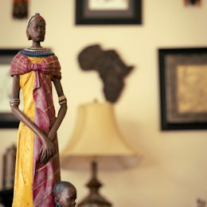
p1 Statuette bronze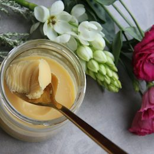
p2 Beurre de karité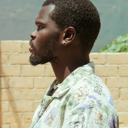
p3 Chemise Faso Dan Fani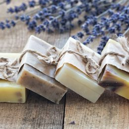
p4 Savon noir karité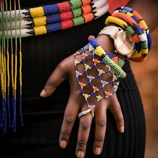
p5 Collier perles bronze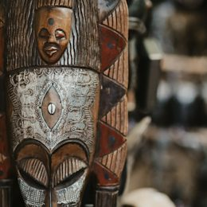
p6 Masque bwa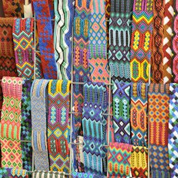
p7 Pagne Faso Dan Fani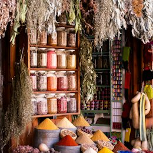
p8 Soumbala poudre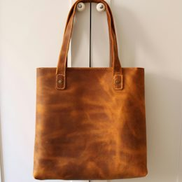
p9 Sac cuir tressép10 Coffret Saveurs du Faso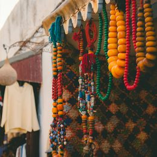
p11 Bracelet bronze gravé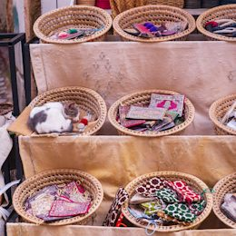
p12 Panier paille